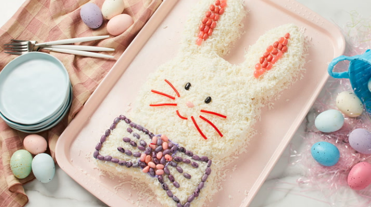

Home
Easy Bunny Cake

Image Credit: Dotdash Meredith Food Studios
Description
A cute coconut cake for springtime that everyone will love.
Ingredients
- 1 (15.25 ounce) package yellow cake mix
- 1 cup water
- 3 large eggs
- 1/3 cup vegetable oil
- 1 (16 ounce) container vanilla frosting
- 3 3/4 cups flaked coconut
- 30 small jelly beans
- 4 sticks red licorice
Directions
- Preheat the oven to 350 degrees F (175 degrees C). Grease two 9-inch metal springform pans.
- Beat cake mix, water, eggs, and vegetable oil in a large bowl with an electric mixer on low speed until moistened, about 30 seconds. Increase to medium speed and beat for 2 minutes. Divide between the prepared pans.
- Bake in the preheated oven until a toothpick inserted into centers comes out clean, 23 to 28 minutes.
- Cool in the pans for 15 minutes. Remove cakes from the pans; transfer to a wire rack and cool completely, about 20 minutes more.
- Place 1 cake on a serving tray, forming the bunny's head.
- Cut 2 convex-shaped ears from each side of remaining 1 cake; place on each side of the head to form ears. Place remaining concave-shaped piece about ½ inch below the head for the bow tie.
- Spread frosting over entire cake top and sides; pat flaked coconut evenly over top and sides. Decorate bunny face and bow tie with jelly beans; use licorice to make whiskers.